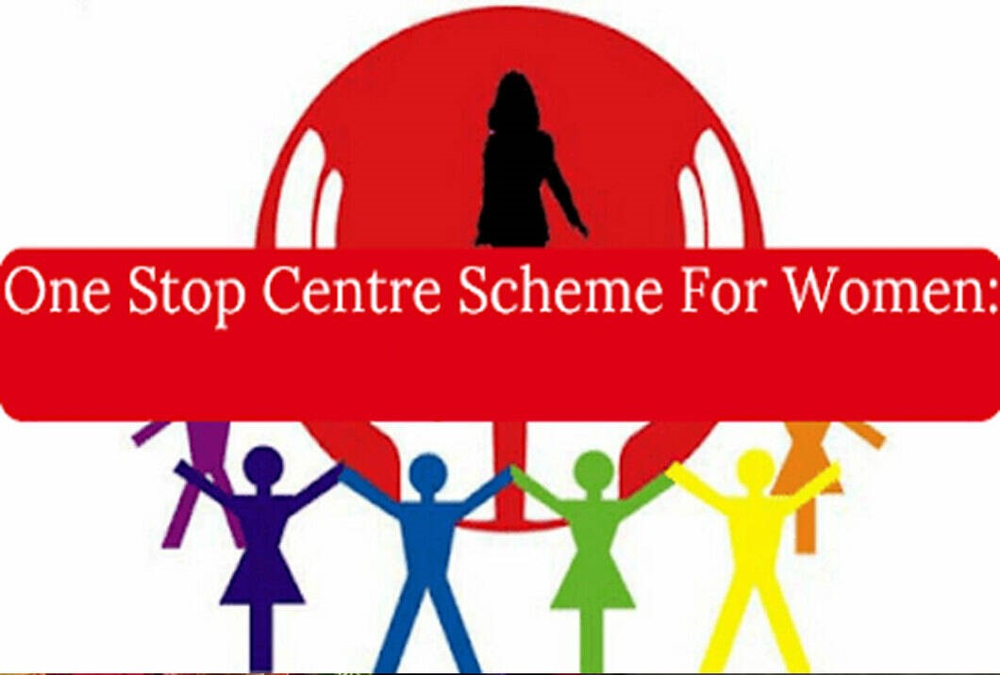
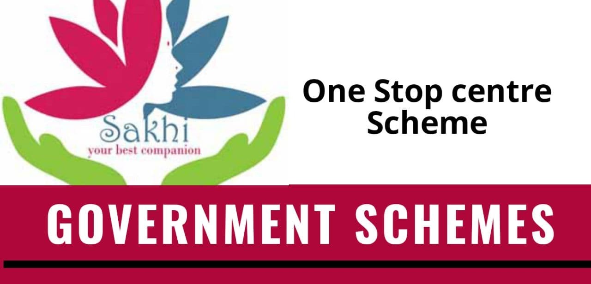

One-Stop Centre scheme is a sub-scheme of the National Mission for Empowerment of Women which also includes the Indira Gandhi Matritva Sahayog Yojana. The scheme is funded by the Nirbhaya fund. Under this scheme, complete financial assistance will be provided by the Centre to the States and the Union territories.
• The Government of India is implementing One Stop Centre (OSC) scheme with effect from 1st April, 2015. OSCs provide a range of integrated services under one roof including police facilitation, medical aid, legal aid and counseling, psycho-social counseling and temporary shelter to women affected by violence or in distress. As on date, 733 OSCs have been approved for 730 districts across the country, out of which 704 OSCs have been operationalised in 35 States/ UTs, which have assisted over 4.50 lakh women. The setting up of OSCs from the year 2015 onward, at district level, have provided a dedicated platform to women facing violence and who are in distress to get necessary help and assistance, which was not available earlier. The OSCs have been set up in different phases in different districts, and over half of them have been operationalised in the past three years.
• In different phases, proposals for setting up 37 OSCs from State of Maharashtra and 03 OSCs from the UT of Andaman and Nicorbar Islands were received in the Ministry. All these centres were approved by the Programme Approval Board (PAB) of the Ministry and are functional as on date. In addition, Ministry has recently received a proposal on 02.12.2021 for setting up one additional OSC in Thane district of Maharashtra.
•As on date, an amount of Rs. 29.39 crore has been released under the scheme to the State of Maharashtra, out of which Utilisation Certificates (UCs) for an amount of Rs. 5.03 crore have been received. In case of UT of Andaman and Nicobar Island, against a total release of Rs. 1.88 crore, UCs have been received for an amount of Rs. 1.24 crore.

Any woman, regardless of age, who has faced physical, sexual, emotional, or economic violence can seek help at a One Stop Center. This includes women affected by domestic violence, trafficking, dowry harassment, and other forms of gender-based violence.
One Stop Centers provide a variety of services, including medical assistance, police assistance, legal aid, psychosocial counseling, and temporary shelter for women in distress. The centers also facilitate access to government welfare schemes and programs aimed at supporting women in crisis.
Women can access One Stop Centers by visiting the center in person or through a referral from police stations, hospitals, or other service providers. They can also contact the 24-hour women’s helpline (181), which can direct them to the nearest One Stop Center.
One Stop Centers are established across various districts in India, typically located in or near district hospitals, police stations, or other government buildings to ensure easy access for women in need. The government has set up centers in many states, and new ones are being continuously opened.
Yes, women can seek help at One Stop Centers without revealing their identity if they wish to maintain confidentiality. The centers maintain strict privacy policies to protect the identities and rights of the victims.
The primary goal of the One Stop Center Scheme is to provide a safe, supportive environment for women affected by violence and to offer them the necessary resources to address their legal, medical, and emotional needs. It aims to empower women by ensuring they have access to justice and rehabilitation services under one roof.
One Stop Centre Scheme
One Stop Centres (OSC) are intended to support women affected by violence, in private and public spaces, within the family, community and at the workplace.
READ
One Stop Centre Scheme
The "One Stop Centre" scheme was launched in India in 2015 to support women affected by violence. It was launched under the aegis of the Ministry of Women and Child Development. The scheme aims to provide an integrated range of services.
READ
One Stop Centre Scheme
OSC Scheme, centres have been created that offer integrated services like medical, legal, psycho-social support and temporary shelter under one roof.
READ